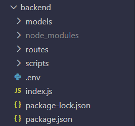
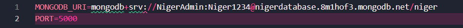
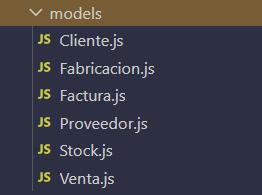
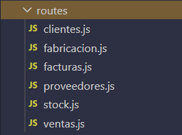

En este reto estamos siguiendo lo que hicimos en el primer reto, solo que en el primer reto partimos de un ERP ya creado como la de Odoo, y en este reto estamos creando nuestro propio ERP desde cero y adaptado a nuestra empresa.
Nosotros como grupo le hemos llamado al ERP igual que nuestro grupo, Níger. Este ERP nos permite llevar de la mejor manera posible nuestra empresa de macetas inteligentes. Para llevar bien toda la gestión dentro de nuestro ERP hemos añadido los siguientes módulos: Fabricación, Facturación, Inventario, Proveedores, Ventas y Documentación.
El desafío de este reto consiste en pasar de utilizar un ERP construido como Odoo, a crear el nuestro propio desde 0, diseñando a medida para cumplir las necesidades de nuestra empresa. Tenemos que desarrollar una aplicación de escritorio totalmente funcional en el que tengamos integrados todos los módulos que necesitemos.
Además, a nivel técnico es más exigente, ya que debemos implementar Node.js, trabajar con una base de datos NoSQL como es MongoDB y manejar una programación asíncrona que garantice fluidez en nuestra aplicación y una respuesta en tiempo real. El reto también busca tener un sistema escalable que en fases posteriores permita conectar la aplicación a dispositivos móviles.
La funcionalidad exacta que queremos conseguir con nuestro ERP es llevar la gestión de la empresa lo mejor posible y para conseguir eso deberemos implementar la gestión de inventario, el registro de proveedores, la gestión de ventas, la creación de las propias macetas, y la gestión de las facturas. Aparte de eso también una ventana para el informe final de reto. Con esto y bastante más funcionalidades completamos nuestro ERP.
Nuestra aplicación es un ERP de escritorio que hemos construido utilizando tecnologías web actuales, pero empaquetado como un programa instalable gracias a Electron. Esto nos permite ofrecer una experiencia similar a la de una aplicación nativa, aunque internamente funcione como una web.
En la parte del frontend trabajamos con React, lo que nos permite crear una interfaz ágil y dinámica. La navegación entre las distintas secciones se realiza sin recargar la página, y utilizamos componentes visuales modernos para mantener una apariencia limpia y coherente en todo el sistema. También contamos con estilos personalizados que nos han ayudado a unificar el diseño de la aplicación.
En el backend, donde se gestiona toda la lógica, funciona con un servidor en Node.js utilizando Express. Desde ahí se atienden todas las peticiones que llegan desde la interfaz. Las peticiones varían entre búsquedas, creación de registros, modificaciones o eliminaciones. Para cada área del ERP como ventas, facturas, stock, proveedores o fabricación tenemos rutas específicas que permiten organizar mejor el funcionamiento. Además, se han configurado mecanismos de validación y manejo de errores para asegurar que los datos se procesan correctamente antes de llegar a la base de datos.
Finalmente, toda la información se almacena en MongoDB Atlas, una base de datos en la nube que nos ofrece flexibilidad y escalabilidad. Cada tipo de información se organiza en su propia colección, y los modelos definidos permiten mantener un control básico sobre la estructura de los datos. MongoDB se encarga de generar identificadores automáticos, lo que facilita relacionar información entre diferentes documentos.
El flujo de funcionamiento es sencillo: el usuario interactúa con la interfaz y esta envía una petición al servidor. El backend procesa la solicitud, consulta la base de datos y devuelve la información en formato JSON. Con esa respuesta, React actualiza la pantalla para mostrar los datos más recientes.
En cuanto al funcionamiento interno, hemos implementado una API REST sencilla que se encarga de gestionar la comunicación entre la interfaz y el servidor. Para realizar las peticiones utilizamos principalmente la API nativa de fetch, aunque en algunos casos también hemos recurrido a axios por comodidad.
Para la conexión del frontend con la base de datos MongoDB, hemos utilizado RestAPI. En la siguiente imagen se puede ver la estructura que sigue.
En el archivo “.env” tenemos los datos necesarios para la correcta conexión con la base de datos.
En la carpeta “models” tenemos los modelos de datos que utiliza nuestra base de datos. Hay un archivo “.js” para cada colección de la base de datos.
En la carpeta “routes” tenemos las rutas necesarias para las llamadas que tiene que hacer la API para el funcionamiento de los distintos módulos de la aplicación. Hay un archivo “.js” para cada módulo de la aplicación.
Una de las partes más importantes del proyecto es cómo convertimos nuestra aplicación web en una aplicación de escritorio nativa usando Electron. Electron es un framework que permite crear aplicaciones de escritorio usando tecnologías web (HTML, CSS, JavaScript). Aplicaciones como Visual Studio Code, Slack o Discord están hechas con Electron.
Lo implementamos de esta manera, en el archivo principal de configuración main.js, donde configuramos la ventana principal que sería el puerto 5173 de localhost, donde se inicia y aloja nuestro frontend:
const createWindow = () => {
const win = new BrowserWindow({
width: 800,
height: 600,
webPreferences: {
nodeIntegration: true,
contextIsolation: false
}
});
win.loadURL('http://localhost:5173/');
};
Habilitamos nodeIntegration para usar funcionalidades del sistema operativo desde el frontend, como leer archivos locales o abrir ventanas del navegador.
Configuramos rutas específicas para cargar documentación HTML estática sin depender del servidor web.
Nuestra base de datos de nombre “niger” está alojada en la nube. Dispone de distintas colecciones (tablas):
Cada colección dispone de una estructura diferente de datos, ajustada a las necesidades de cada módulo del que dispone nuestra aplicación.
La colección de clientes dispone de este formato que se ve en la imagen. Dispone de estas diferentes columnas:
La colección de fabricacions dispone de este formato que se ve en la imagen. Dispone de estas diferentes columnas:
La colección de facturas dispone de este formato que se ve en la imagen. Dispone de estas diferentes columnas:

La colección de proveedors dispone de este formato que se ve en la imagen. Dispone de estas diferentes columnas:
La colección de stocks dispone de este formato que se ve en la imagen. Dispone de estas diferentes columnas:
La colección de ventas dispone de este formato que se ve en la imagen. Dispone de estas diferentes columnas:
Hemos utilizado la inteligencia artificial a lo largo del reto. Es de gran ayuda poder contar con una herramienta así y nos ha ayudado en casos puntuales. La hemos utilizado, sobre todo cuando nos ha surgido alguna duda que ningún miembro del equipo ha sabido solucionar. También la hemos empleado para facilitar tareas repetitivas o irrelevantes. En cualquier caso, los resultados de la IA han sido revisados, comprendidos y modificados para implementarlos en el proyecto.
Descripción: El método findById() retornaba null incluso con documentos existentes.
Solución: Workaround manual que garantizó eliminación y actualización:
const todosLosDocs = await collection.find({}).toArray();
const docEncontrado = todosLosDocs.find(doc => doc._id.toString() === id);
const resultado = await collection.deleteOne({ _id: docEncontrado._id });
Problema: La interfaz mostraba márgenes que no queríamos y descuadraba el diseño responsive.
Solución: Uso mejor y con sentido del CSS y estilos específicos por componente.
Problema: Al editar ventas, los totales no se recalculan automáticamente.
Solución: Recálculo automático en frontend y validaciones adicionales para evitar errores.
Problema: Al eliminar una de las piezas, no se guardaba en la base de datos, y al reiniciar no se guardaba la eliminación.
Solución: Uso incorrecto del delete, no ponemos bien los ID. Esto es, no conseguimos poner el mismo nombre en el frontend que en el backend y nos daba error.
A mi parecer, todo el tiempo empleado en la fase 4, nos sirvió un poco para hacernos una idea y poder seguir adelante con la parte más grande del reto, ya que al principio andábamos un poco perdidos, pero con el tiempo fuimos entendiendo con la teoría recibida y los ejercicios realizados. En cuanto al grupo y el trabajo dentro de él, creo que en comparación con el reto anterior, en este nos hemos implicado más y hemos invertido más tiempo en él. En conclusión, estoy bastante contento con el resultado y la forma que ha cogido el proyecto, ya que estamos todos bastante satisfechos con todo lo aprendido y yo personalmente conmigo mismo por los conocimientos que he adquirido y la forma que ha cogido todo.
Durante la fase 4 del reto sentía que la mayoría tanto de clase como de nuestro grupo no tenía mucha idea de por donde iba el proyecto. Una vez empezada la fase 9, entendimos algo más el reto y pudimos enderezar el proyecto. Al final hemos estado bastante justos de tiempo, creo que la decisión de quitar una semana de proyecto, aunque la entiendo, fue algo precipitada. Pero en resumen estoy bastante contento con el resultado de nuestro reto y me parece que en general hemos hecho un trabajo muy correcto.
Este ha sido un reto en el que he aprendido bastante sobre mongo y electrón entre otras cosas ya que en mi caso partía casi de 0. La fase 4 fué bastante útil en la mayoría de asignaturas para adquirir conocimientos y ponerlos en práctica en las siguientes fases. Hemos sabido superar los obstáculos técnicos y temporales trabajando en equipo. Creo que el resultado ha sido muy bueno tanto individual como grupalmente y hemos quedado satisfechos.
Después de adquirir conceptos en la Fase 4 del proyecto, tuve la sensación de que no sería suficiente con la materia que nos habían dado. Una vez hecho el desarrollo del proyecto pienso diferente, pienso que la materia que nos dieron sí que fue suficiente. Como grupo pienso que hemos trabajado bien, ya que tenemos confianza entre nosotros y tenemos una amistad cercana. Estoy satisfecho con el desarrollo y resultado de este Reto. Pero no me parece bien tener que entregar el mismo resultado después de haber recortado el tiempo presentado al principio.
En mi opinión, el reto me ha gustado bastante más que el anterior, me ha parecido también bastante más útil que el anterior y también creo que he aprendido más. En la dificultad del reto, me ha parecido bastante difícil crearlo desde cero, pero me ha gustado que tenga alguna dificultad. En resumen, pienso que el reto ha estado bien y que he aprendido bastantes cosas.
En conclusión, después de estas semanas trabajando en equipo hemos quedado satisfechos con el resultado. Todos nos hemos esforzado y hemos colaborado para que el resultado final sea el mejor posible. Además, hemos aprendido cosas útiles como utilizar electrón o crear una aplicación desde 0 con conexiones a API y bases de datos. Consideramos que hemos obtenido un resultado más que bueno aun sin saber mucho sobre cosas como las máquinas virtuales o APIs. El reto ha servido para seguir reforzando nuestras habilidades de trabajo en equipo y también para aprender cosas nuevas sobre programación o bases de datos.